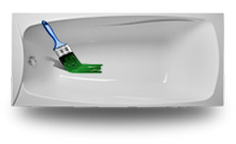
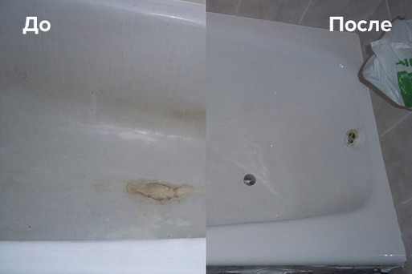

Реставрация Ванн в Украине (Наливная ванна) - Vannalux
Реставрация Ванн
Реставрация Ванн
VannaLux
VannaLux
Реставрация ванн с гарантией службы более 15 лет
Данная услуга – это способ восстановить старую или повреждённую ванну до состояния новой. Подобное достигается нанесением на её поверхность нового слоя жидкого акрила или эмали. По цене, это дешевле чем купить новую. По качеству, это значительно надёжнее, разумеется, если работу выполняет профессиональный, опытный мастер. Восстановленная ванна прослужит до 15-20 лет, после чего, её можно обновить повторно. Весь процесс занимает 3-4 часа и проходит на дому, без необходимости демонтажа ванны.
Восстановить можно стальную, чугунную или акриловую ванну.
Адекватные и Честные Цены

Наливная ванна
(Жидким акрилом)
от 1500 грн.
- Срок службы наливной ванны 15-20 лет
- Время проведения работ 3 - 4 часа
- Время высыхания всего 24 часа

Эмалировка ванн
(Акриловой эмалью)
от 1200 грн.
- Срок службы наливной ванны до 3-5 лет
- Время проведения работ 3 часа
- Время высыхания всего 36 часа
Дополнительные услуги
- Зачистка ранее нанесенного слоя эмали или акрила - 250 грн.
- Выезд мастера за пределы города - обговаривается.
- Устранение сколов - от 500 грн.
- Нестандартные ванны, поддоны, душевые кабины - обговаривается.
- Монтаж сифона старого типа (чугун) - обговаривается с мастером.
Звоните нам! Мы ответим на все Ваши вопросы, проконсультируем и примем заявку.
Телефоны для заявок:
(097) 128-43-99 Киевстар
(050) 666-31-20 Vodafone
Заявки по телефону:
БЕЗ ВЫХОДНЫХ
09.00 – 20.00
Ниже мы приведем несколько причин, указывающих на то, что реставрация ванн акрилом – это актуально и выгодно:
- Далеко не все имеют возможность организовать полную замену ванной. Не только сама новая ванна и ее монтаж требуют больших финансовых вложений, но и демонтаж старого изделия довольно дорого обходится.
- Распространены случаи, когда необходимо чуть ли не половину квартиры или частного дома развалить, чтобы демонтировать и вынести старую чугунную ванну.
- Очень многие из нас не хотят избавляться от своей старой ванны, да и к тому же, если осуществляется грамотный уход за чугунной ванной после ее реставрации, то это сооружение можно назвать вечным!

Как новая
Визуально не видно
следов реставрации.

Низкая цена
В 3-4 ниже, чем покупка
новой ванны

24 часа
И вы можете пользоваться
своей новой ванной.

Любой цвет
Все цвета радуги
в вашем распоряжении.

15 лет
Будет служить
новое покрытие.

Более 10 лет
Опыт работы
каждого из мастеров.
Что еще мы восстанавливаем?
Душевые поддоны
Джакузи
Полируем ванны
Методы реставрации ванн которые можно заказать у нас
Наливная ванна — покрытие жидким акрилом
Наливная реставрация – метод, который заключается в покрытии внутренней части чаши жидким акрилом. Предварительно нужно ошкурить рабочую поверхность, обезжирить и нанести эмаль способом налива. Жидкий акрил – самовыравнивающийся материал, который под воздействием собственной массы заполняет все микротрещины, создавая прочный внешний слой.

Среди преимуществ реставрации ванн методом налива можно отметить:
- практически полное отсутствие химических запахов;
- долговечное покрытие со сроком службы более 15 лет;
- быстрый рабочий процесс длительностью 3-4 часа;
- отсутствие необходимости демонтажа старой ванны;
- экологическая безопасность используемых материалов;
- срок высыхания – 24-36 часов.
При восстановлении ванн акриловой эмалью важно соблюдать следующие правила:
- Температура помещения – 24-26 градусов.
- Отсутствие пыли в ванной комнате.
- Устранение возможности попадания влаги на поверхность.
Этапы работ:
- Снятие старой эмали. Перед тем как начать реставрацию жидким акрилом, нужно подготовить поверхность пройдясь по ней наждачной бумагой или болгаркой с абразивными кругами. Это нужно для того, чтобы поверхность стала шершавой и акрил крепко сцепился со старой эмалью.
- Мойка и обезжиривание поверхности. На этом этапе мы убираем всю пыль и грязь, которые образовались в результате обработки и использования ванны.
- Нанесение акрила. Начиная с дальнего борта, специалисты наносят эмаль методом налива. После всех работ нужно подождать 24 часа, и ваша ванна выглядит как новая.
Материалы
Более чем за 10 лет работы по реставрации ванн, специалисты нашей компании испробовали большое количество эпоксидных эмалей, жидкого акрила и различных красок. В своей работе мы используем только лучшие материалы, которые на деле доказали свою долговечность, экологичность и белизну.
Виды ванн, которые поддаются восстановлению:
- Чугунные.
- Акриловые.
- Стальные.
- Железные.
- Квариловые.
- Из литьевого мрамора.
- Из натурального и искусственного камня.
Основные материалы для реставрации ванн:
- жидкий акрил – современная двухкомпонентная смесь, которая наносится методом налива;
- эмаль (эпоксидная и аэрозольная).
По прошествии времени мы проверяем восстановленные ванны по следующим показателям:
- желтизна;
- насыщенность цвета;
- гладкость;
- трещины и сколы.
Постоянно проводим тесты новых материалов. Занимаемся подготовкой мастеров. Повышаем уровень существующих специалистов.
На основании своего опыта мы отобрали только лучшие марки, которые существуют в продаже в Украине:
Стакрил (Stacril)
Материал Жидкий акрил
Производитель Эколор
Время высыхания 24 часов
Срок службы 15-20 лет
Нанесение Методом налива
")
Пластол (Plastall)
Материал Жидкий акрил
Производитель Пластол
Время высыхания 24 часов
Срок службы 15-20 лет
Нанесение Методом налива
Ответы на вопросы по реставрации ванн
- Вопрос: Нужно-ли вывозить ванну для ее эмалировки?
Ответ: Для эмалировки ванны её не нужно ни куда вывозить или выносить. Это очень важный момент при реставрации и покраски ванн.
- Вопрос: Скажите, когда лучше произвести эмалировку (покраску) ванны, до того, когда будет сделан ремонт в квартире и в ванной комнате, или после?
Ответ: Во избежание неприятностей таких как: попадание пыли и грязи на только что покрашенную ванную, падение инструментов и различного рода стройматериалов, мы настоятельно рекомендуем реставрировать ванну после полного ремонт в вашей квартире.
- Вопрос: Есть ли запах и пыль при эмалировке ванны?
Ответ: Если вы переживаете, что при покраске ванны будет сильный запах и много пыли, могу сказать, что новые технологии, на данный момент, позволяют избавиться от всех этих неприятностей. Нет ни запаха, ни пыли!
- Вопрос: Нужно ли снимать сифон (слив)?
Ответ: Сифон снимать нельзя, он понадобится при подготовке ванны к зачистке.
- Вопрос: Какие ванны вы реставрируете?
Ответ: На данный момент мы занимаемся реставрацией практически всех видов ванн, таких как - чугунных, железных, акриловых. Акриловые восстанавливаем в зависимости от их состояния.
- Вопрос: В каких городах вы работаете?
Ответ: Мы работаем практически по всей Украине и занимаемся реставрацией и эмалировкой ванн в Киеве, Одессе, Харькове, Днепропетровске, Запорожье, Николаеве, Херсоне, Львове, Хмельницком, Житомире, Виннице, Черкассах, Кировограде, Луцке, Кривом Роге, Ровно.
- Вопрос: Возможен ли выезд мастера в пригород?
Ответ: Да, возможен, при оплате за проезд.
- Вопрос: Сколько по времени происходят работы?
Ответ: Подготовка ванны и дальнейшее её покрытие эмалью или жидким акрилом составляет около 3-4 часов, в зависимости от сложности работы.
- Вопрос: Можно ли восстановить ванну, стоящую на улице?
Ответ: Нет. Для эмалировки или покрытия ванны жидким акрилом требуется закрытое помещение, для того чтобы выдержать температурный режим. Также при этом должны работать слив и смеситель.
Как оформить заказ на реставрацию ванны

Вызов мастера и бесплатная консультация по телефонам:
097-128-43-99 Киевстар
050-666-31-20 Vodafone
Звоните!
ежедневно без выходных
с 9-00 до 20-00
Восстановление чугунных ванн
Замена чугунной ванны – это очень сложный и дорогостоящий процесс, который напрямую связан с демонтажем и выносом очень тяжелого изделия, что говорит о значительных разрушениях как в самой ванной комнате, так и, возможно, в других частях квартиры или дома. Однако, благодаря тому, что современная наука и техника не стоят на месте, появилась отличная альтернатива дорогостоящему и сложному демонтажу – восстановление чугунных ванн. Также большое значение имеет тот факт, что заказчики получили возможность выбора способа реставрации, в зависимости от того, какой эффект необходимо достичь и какие финансовые вложения доступны.
Методы восстановления чугунной ванны
Эмалировка ванны
При таком варианте, основное средство для восстановления эмали ванн – эпоксидная эмаль. Этот метод является самым дешевым из существующих сегодня. Главное его достоинство – отсутствие необходимости демонтажа и отсоединения ванной от канализации. Также этот способ часто применяется для самостоятельного восстановления изделия – для этого необходимо лишь купить эмаль для восстановления ванны, инструменты и другие принадлежности.
Акриловый вкладыш
Этот метод более дорогой, чем эмалировка, однако все равно более доступный, чем приобретение нового изделия для купания. Также важно отметить, что специальные технологии, соблюдаемые при создании и установке акрилового вкладыша, являются довольно сложными, а значит, невозможно и восстановление ванны своими руками таким методом.
Наливная ванна
Как и в случае с акриловым вкладышем, восстановление чугунной ванны методом "наливная ванна" позволяет полностью восстановить поверхность изделия, а также добавить к его характеристикам целый ряд полезных свойств. Восстановление ванны методом налива – это равномерное, но свободное нанесение наливного акрила на старую поверхность изделия.